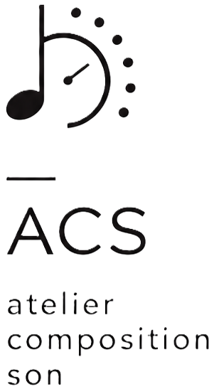
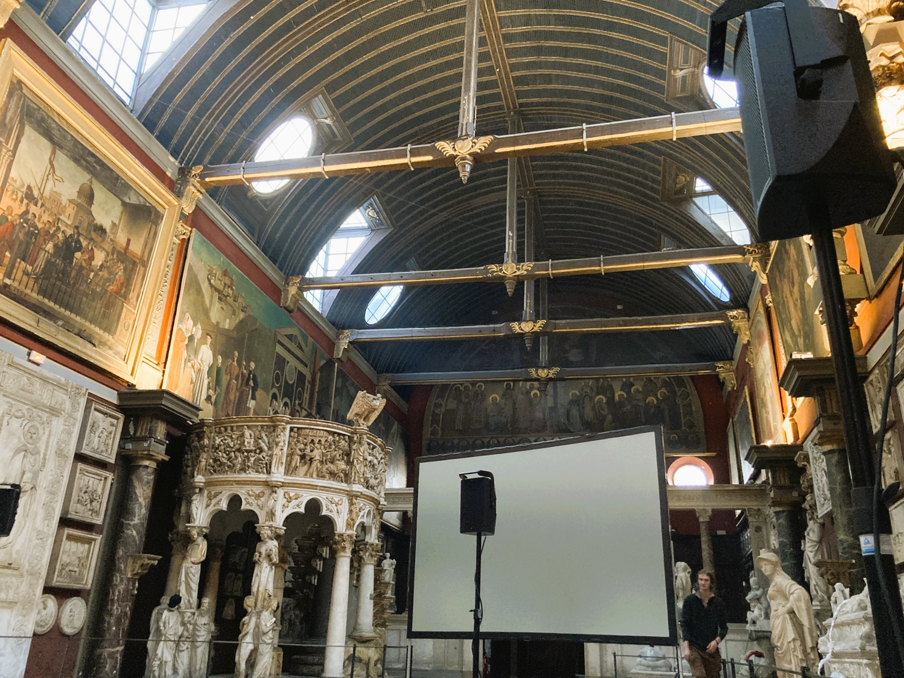
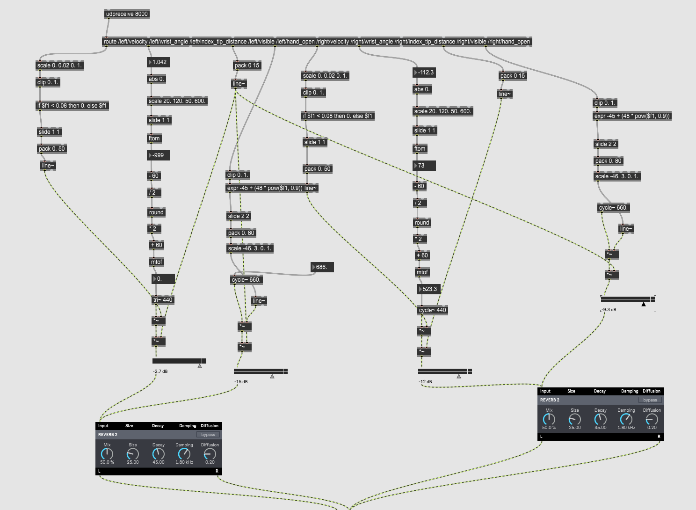

composition
écriture musicale, forme et développement.

Atelier Composition Son studio de créationcours en ligne
français
Un accompagnement pour développer une pratique musicale personnelle : écriture, forme, timbre, écoute, outils numériques et direction artistique.
Les nouvelles technologies, y compris l’IA, peuvent être abordées comme outils de création, de recherche ou de performance lorsqu’elles servent réellement le projet artistique.
Pour compositeurs, producteurs, artistes sonores, étudiants et créateurs qui souhaitent structurer leurs idées et affiner leur langage musical.
Activité entre composition contemporaine, musique électronique et recherche sonore.
Le cours ne suit pas une méthode unique. Il part de votre niveau, de vos références, de vos outils et du type de musique que vous souhaitez construire.
L’objectif est de clarifier vos matériaux, de renforcer vos décisions et de donner une forme plus précise à votre univers sonore.
Atelier Composition Son est conçu comme un espace de formation exigeant, à la croisée de la composition contemporaine, de la musique électronique et de la recherche sonore.
La direction pédagogique est assurée par Sachie Kobayashi, compositrice et artiste sonore formée en composition et pédagogie musicale à la Haute École de Musique de Genève.
L’enseignement privilégie une approche précise, personnelle et critique : développer l’écoute, structurer les idées, comprendre les outils, et construire une pratique musicale autonome.
Le travail artistique a été présenté dans différents contextes liés à la création contemporaine, à la performance et aux pratiques hybrides entre son, image et technologie.

Certaines classes proposent une vidéo de démonstration d’environ dix minutes, pensée comme une première séance accessible aux débutants. Les cours individuels ont lieu en ligne via Zoom. Les vidéos de démonstration sont hébergées sur YouTube et pourront évoluer ensuite vers des mini-cours plus développés.
écriture musicale, forme et développement.
écoute, structure, harmonie et langage musical.
lecture, rythme, écoute et formation musicale.
demander ce coursinstruments, timbre et écriture orchestrale.
demander ce courssynthèse sonore et création de textures.
demander ce coursmontage, espace, traitements et matière sonore.
demander ce courscomposition numérique, hybridation et performance.
demander ce coursAbleton Live, workflows et production.
demander ce coursLe travail pédagogique et artistique s’inscrit dans des contextes liés à la performance, à l’installation sonore, à la recherche musicale et aux pratiques contemporaines du son.

Les cours peuvent intégrer différents logiciels et outils selon le projet : composition, production, synthèse, performance, analyse ou création audiovisuelle.

Chaque parcours est adapté à votre niveau, vos objectifs, votre esthétique musicale et votre manière de travailler. Débutants, étudiants avancés ou artistes en activité peuvent développer une approche structurée et progressive.
Les outils d’intelligence artificielle peuvent être intégrés activement dans des projets de composition, de performance, de génération audiovisuelle ou de recherche sonore, tout en conservant une pensée musicale personnelle et critique.
Le travail peut intégrer DAW, Max/MSP, TouchDesigner, synthèse sonore, partition, orchestration numérique, IA générative, transformation vocale, outils audiovisuels, workflows hybrides et méthodes adaptées aux pratiques contemporaines.
Les cours peuvent être suivis à partir d’une séance par mois, avec un rythme flexible selon votre emploi du temps, votre projet et votre disponibilité créative.
Le travail à distance permet de partager directement projets, sessions, partitions, patches et références sonores. Les échanges peuvent intégrer l’écoute, l’analyse et les outils numériques dans un environnement de travail fluide.
en préparation
Mini-cours en 4 vidéos d’environ 30 minutes. Une introduction progressive à la composition, au sound design et aux outils numériques.
70€ / h
Accompagnement en ligne via Zoom, centré sur votre projet, votre niveau et vos outils.
Oui. Les cours sont adaptés au niveau et au parcours de chaque personne. Certains étudiants viennent de la composition classique, d’autres de la production, du cinéma, du sound art ou de pratiques autodidactes.
Oui. Pièces, albums, performances, portfolios, musique à l’image, installations, projets électroniques ou recherches personnelles peuvent être intégrés directement au travail du cours.
Non. Ableton Live, Logic Pro, Reaper, Pro Tools, Cubase, Studio One, Max/MSP ou d’autres environnements peuvent être utilisés selon votre pratique. Des étudiants travaillent déjà avec différents workflows et configurations.
Le rythme dépend du projet et du temps disponible. Certaines personnes travaillent chaque semaine, d’autres une fois par mois avec un suivi plus autonome entre les séances.
Non. Le travail peut concerner la composition contemporaine, la musique électronique, le sound design, l’ambient, l’expérimental, la musique à l’image ou des formes hybrides.
Le centre reste la composition, l’écoute et le son, mais les projets utilisant activement l’IA, Suno, ElevenLabs, Supertone, la génération audiovisuelle, la transformation vocale, Max/MSP ou TouchDesigner sont également bienvenus lorsqu’ils s’inscrivent dans une démarche artistique cohérente.
Indiquez votre niveau, vos outils, et ce que vous souhaitez travailler : composition, sound design, portfolio, pièce en cours, recherche sonore ou mini-cours. Les cours individuels ont lieu en ligne via Zoom.
Vous pouvez aussi écrire directement à info@sachiekobayashi.com.
Le premier échange de 30 minutes est gratuit. Après la réservation, un lien Zoom est envoyé automatiquement par email.